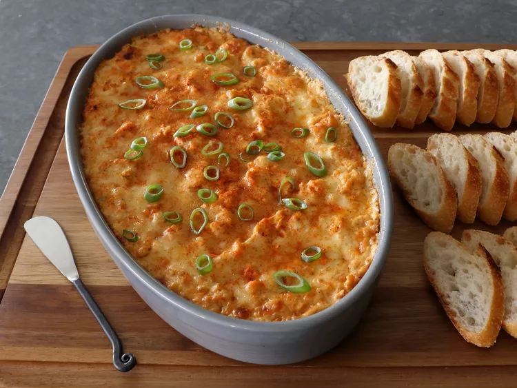

Crab Dip

Great crab dip for game day. It even works nicely with the cheap canned crab you find next to the tuna fish and chopped clams. If a hot shellfish dip isn’t your thing, pretty much any chopped up protein will do just fine. By the way, if times are really tough, you don’t have to add anything.
Ingredients
- 2 (8 ounce) packages cream cheese, at room temperature
- 1/3 cup sour cream
- 1/3 cup mayonnaise
- 1/4 cup ketchup
- 2 teaspoons Worcestershire sauce
- 2 cloves garlic, minced
- 1 lemon, zested and juiced
- 2 teaspoons seafood seasoning, such as OLD BAY® Seafood Seasoning
- 2 teaspoons paprika
- 1 teaspoon hot sauce
- 1 teaspoon freshly ground black pepper
- 1/4 teaspoon cayenne pepper, or more to taste
- 6 ounces shredded white Cheddar cheese, divided
- salt to taste
- 1/2 cup sliced green onions
- 1 pound lump crab meat
- Preheat the oven to 450 degrees F (230 degrees C).
- Stir cream cheese, sour cream, mayonnaise, ketchup, Worcestershire sauce, garlic, lemon zest and juice, seafood seasoning, paprika, hot sauce, freshly ground black pepper, cayenne, and 4 ounces shredded Cheddar cheese together in a bowl until well combined. Season with salt.
- Add green onions and crab meat to the bowl; fold in gently with a spatula until evenly mixed.
- Transfer into a baking dish or deep pie dish. Top with remaining 2 ounces shredded Cheddar and a shake of cayenne.
- Bake in the preheated oven until dip is piping hot, about 20 minutes. Let rest 10 minutes before serving.
- Serve with more green onions and sprinkle more cayenne on top if desired.